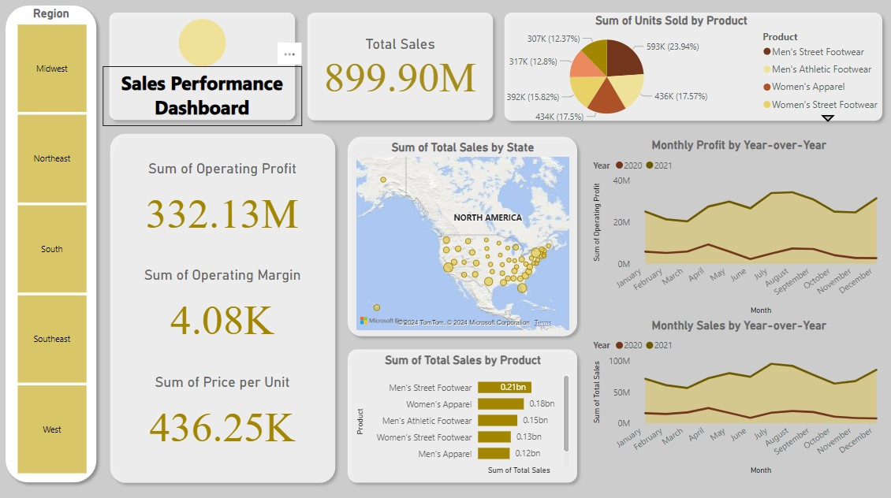
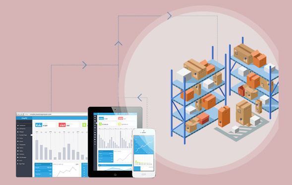

Hello! My name is Muzna Maryam, and I am pursuing a bachelor's degree in Artificial Intelligence at the Deggendorf Institute of Technology. With hands-on experience from my internship at SAP and a range of AI and data analytics projects, I am passionate about using machine learning and software engineering to build innovative solutions that solve real-world problems.
I’ve worked on diverse projects such as developing an AIDS infection prediction model with 80% accuracy, an American Sign Language recognition system integrated into a Jetbot, and a Titanic survivor prediction web app. My expertise lies in leveraging tools like Python, Java, Scikit-learn, and TensorFlow to develop robust software and machine learning models. I also have experience in software compliance, Java testing, and database management from my internship at SAP.
I'm always eager to learn new technologies and take on challenging problems, whether it's in healthcare tech, machine learning, or web development. Feel free to reach out to me through the contact links below!
Developed an AIDS infection prediction model in Python with 80% accuracy using Scikit-Learn, implementing various algorithms and techniques such as RandomForestClassifier, XGBClassifier, and cross-validation for robust predictions.
Skills: Python, Scikit-Learn, Matplotlib, Seaborn, Machine Learning, Data Analysis

Developed an interactive sales performance dashboard in Power BI, utilizing time series analysis and DAX measures to deliver accurate sales forecasting and actionable insights.
Skills: Power BI, DAX, Data Visualization, Time Series Analysis

Developed a responsive SAP UI5 web application for managing inventory data via OData, incorporating dynamic sorting, filtering, and custom controls to enhance user experience while adhering to SAP Fiori design principles.
Skills: SAPUI5, OData, JavaScript, Web Development

Collaborated with a group of 7 classmates to develop a Titanic survivor prediction web app using Python (FastAPI) and Docker, integrating five ML models for survival forecasting while managing development with GitLab, Scrum, and automated testing frameworks.
Skills: Python, FastAPI, VueJs, Docker, Jira, GitLab
Developed a PyQt6 desktop application that predicts chronic heart disease risk for males over the next decade, utilizing Scikit-learn algorithms for accurate forecasting and Pandas for intuitive data visualization.
Skills: Python, PyQt6, Scikit-Learn, Data Visualization
Created a multilingual chatbot leveraging the THD university database to deliver real-time information on language courses, exams, and schedules for German, English, Chinese, Russian, and Italian, enhancing accessibility for students.
Skills: Python, Chatbot Development, RASA